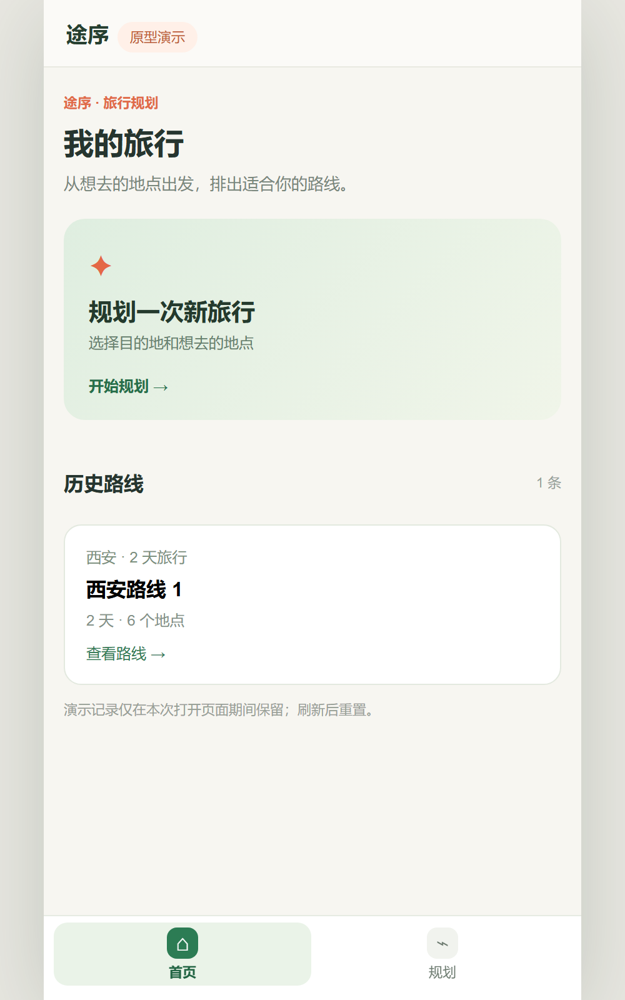
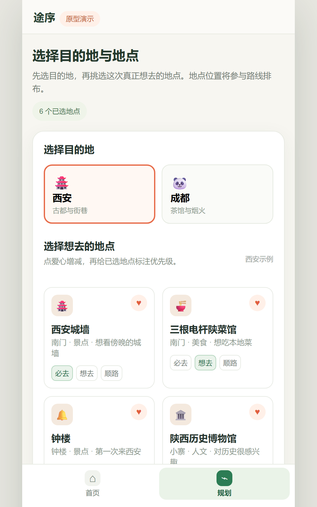
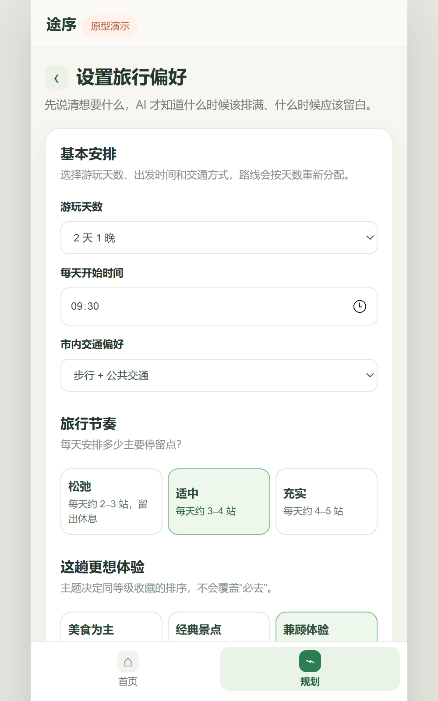
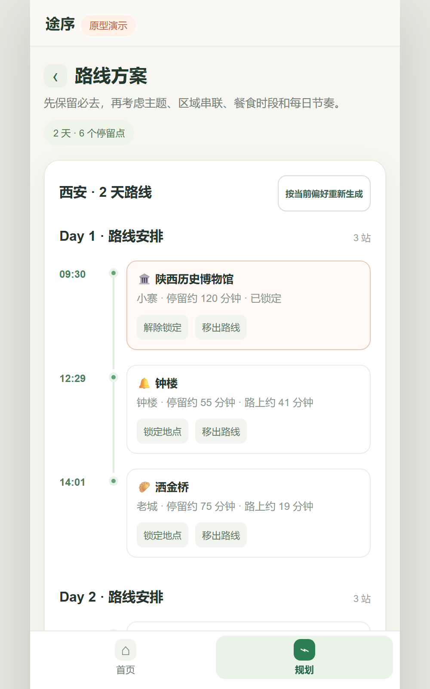
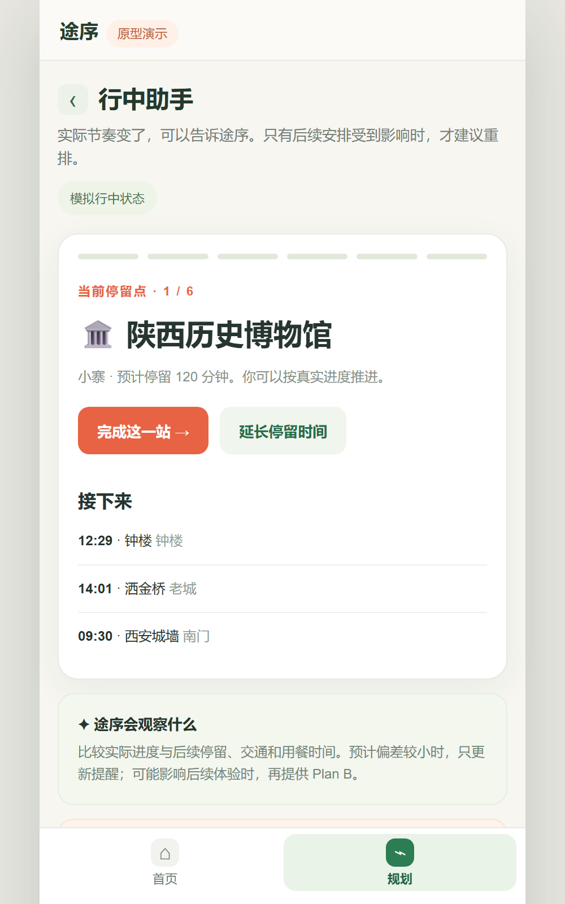
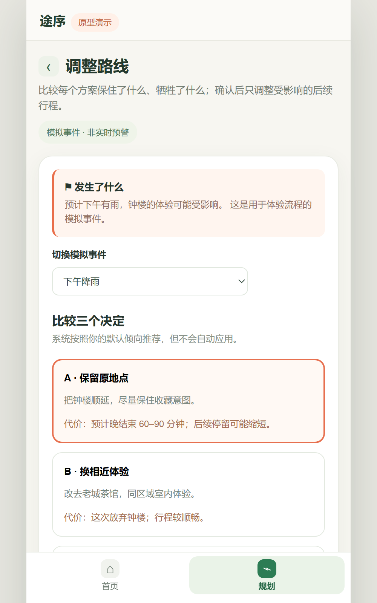

TRAVEL PLANNING PROTOTYPE
途序 Tripwise
面向收藏了许多地点、却难以排出合适行程的自由行用户。根据地点优先级和旅行偏好生成路线，并在旅途中比较不同 Plan B 的影响。
浏览器中的规则驱动原型。地点、时间和变化情境均为演示数据；路线估算与 Plan B 由前端规则生成，尚未接入真实地图、交通、天气或人流服务。
项目背景与目标用户
自由行用户常在多个平台收藏景点和餐厅，规划时仍需自己判断哪些必须去、哪些可以顺路加入，以及如何兼顾天数、节奏与交通。行中一旦停留延长或遇到外部变化，又要重新安排剩余地点。
产品目标与设计判断
产品把“规划前的优先级表达”和“变化后的重新取舍”串成一条流程。必去、想去、顺路三个层级帮助用户表达真实偏好；天数、节奏、主题和交通方式成为排程条件；任何 Plan B 都先展示影响，再由用户确认应用。
核心体验流程
首页进入规划 → 选择城市与地点并标注优先级 → 设置天数、开始时间、节奏、主题和交通 → 生成按天路线 → 在行中助手查看进度 → 遇到模拟变化时比较顺延、替换、减少一站 → 确认调整。
界面展示
首页、地点选择、旅行偏好、路线方案、行中助手和 Plan B 对比构成完整的移动端体验。下方截图可查看关键状态；点击“体验移动端原型”可以逐步操作。












Vibe coding 与实现
先明确地点优先级、排程条件和 Plan B 的决策规则，再用原生 HTML、CSS 与 JavaScript 实现。前端根据地点权重、主题和示意距离生成路线，并把候选调整及其代价呈现给用户。当前会话保留路线历史，刷新后重置。
当前成果与边界
独立仓库提供完整的交互页面与界面截图。地点位置、时间、天气、人流和交通变化均为模拟或估算，路线未经过真实出行验证；后续可接入地图、营业信息和实时交通，再开展任务测试。
SEO GEO做好